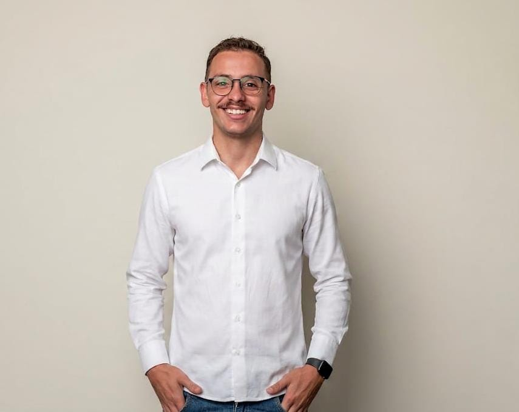
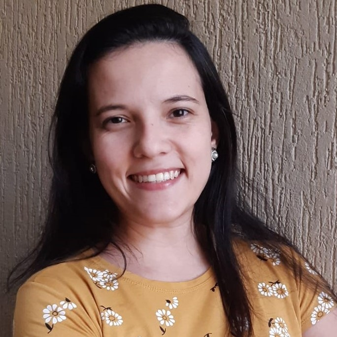
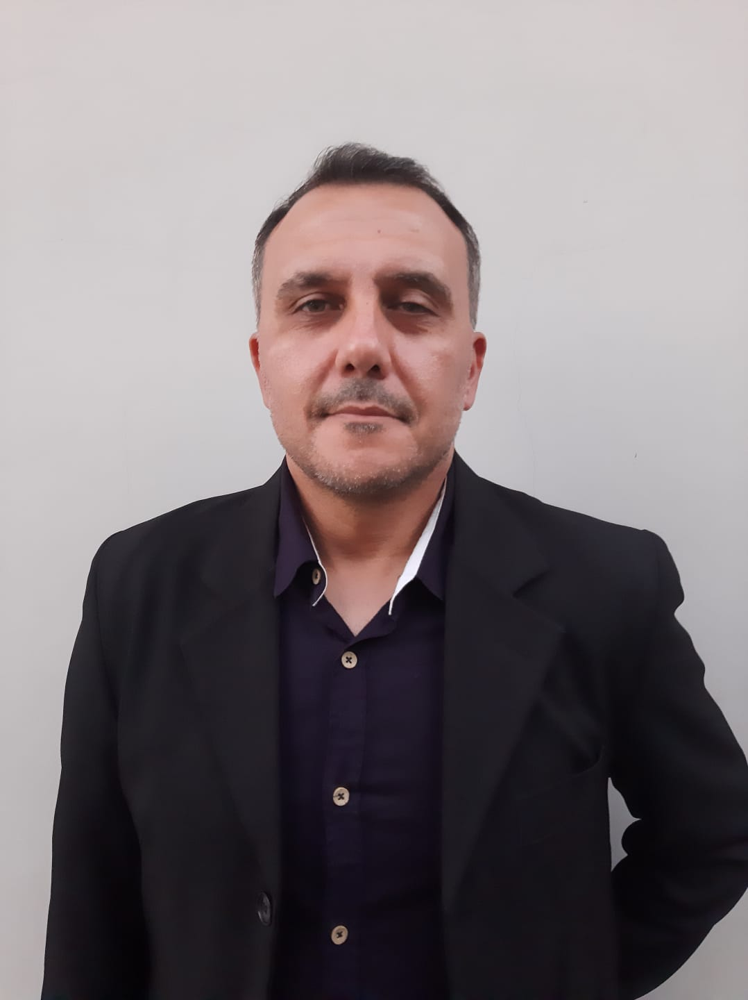

Oficinas
6 oficinas práticas. Vagas limitadas — garanta sua inscrição.

Oficina
Maurílio Antônio de Melo Souza
Tecnólogo em Agroindústria (FATEC Capão Bonito) e Eng. de Biossistemas (IFSP)
Engenheiro de Biossistemas (IFSP)
Produção Orgânica e Multiplicação de Bioinsumos onfarm
Tecnólogo em Agroindústria pela FATEC Capão Bonito e Engenheiro de Biossistemas pelo IFSP. Atua em soluções para produção orgânica de grãos. Uma das 'vozes da transição' (Instituto Folio + Globo Rural); experiência em microbiologia agrícola e agricultura orgânica/regenerativa.
23/09 · 09h30–12h00 · 20 pessoas

Oficina
Mayara de Souza Queirós
Profa. Dra. — Tecnóloga em Alimentos (FATEC Marília), Mcfª/Pós-doc (UNICAMP)
FATEC Capão Bonito (docente) e UFSCar (docente colaboradora)
Subprodutos da Indústria Láctea: Obtenção, Aproveitamento e Inovações no Desenvolvimento de Alimentos
Tecnóloga em Alimentos (FATEC Marília) com mestrado, doutorado e pós-doutorado em Tecnologia de Alimentos pela UNICAMP. Docente do CST em Agroindústria da FATEC Capão Bonito e colaboradora na UFSCar (Engenharia de Alimentos).
23/09 · 14h00–16h00 · 20 pessoas

Oficina
Maria Cecília Enes Ribeiro
Profa. Dra. — Eng. de Alimentos, Mcfª/Drª em Tecnologia de Alimentos (UNICAMP)
FATEC Capão Bonito e FATEC Piracicaba (docente)
Subprodutos da Indústria Láctea: Obtenção, Aproveitamento e Inovações no Desenvolvimento de Alimentos
Engenheira de Alimentos com mestrado e doutorado em Tecnologia de Alimentos pela UNICAMP. Docente do CST em Agroindústria da FATEC Capão Bonito e do CST em Alimentos da FATEC Piracicaba. Pesquisadora (RJI) em Tecnologia de Leite e Derivados.
23/09 · 14h00–16h00 · 20 pessoas

Oficina
Adriano Elias Daniel
Prof. Me. — Sistemas Inteligentes (FATEC Capão Bonito) e ADS (FATEC Itapetininga)
FATEC Capão Bonito / FATEC Itapetininga
Agentes Inteligentes
Leciona nos cursos de Sistemas Inteligentes da FATEC Capão Bonito e de Análise e Desenvolvimento de Sistemas (ADS) na FATEC Itapetininga. Mestrado em Processos Tecnológicos e Ambientais pela Uniso (2021), especialização em Data Science and Statistics (2023) e em Full Stack Java Developer (2024), graduação em Ciência da Computação (UNIP, 2003).
23/09 · 14h00–15h30 · 20 pessoas

Oficina
Fábio Veloso da Silva
Agronegócio (ETEC, 2016); cursando Agronomia (Anhanguera); precisão desde 2023
IAGRO — Agricultura de Precisão
Amostragem de solo e mapas em grade na agricultura de precisão
Formado em Agronegócio pela ETEC (2016), cursando Agronomia pela Faculdade Anhanguera. Trabalha com Agricultura de Precisão desde 2023.
23/09 · 09h30–11h00 · 25 vagas

Oficina
Hamilton Takeda
Tecnólogo em Silvicultura; Coord. de Desenvolvimento de Mercado; esp. em Pulverização
Agricultura de Precisão / Silvicultura
Uso de Drones de pulverização na silvicultura e agricultura: Da Entrega Técnica à Eficiência Operacional
Tecnólogo em Silvicultura, Coordenador em Desenvolvimento de Mercado e Especialista em Tecnologia em Pulverização e Aplicação de Sólidos.
23/09 · 09h30–12h00 · 25 pessoas